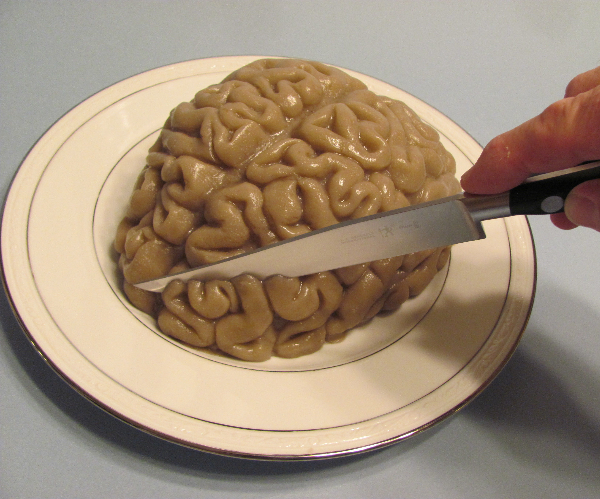

For girls of any age! (Requires adult supervision for girls under the age of 14)
Estimated amount of time: Should take no longer than 30 minutes but must refrigerate overnight
 Click here to buy brain-shaped jello molds from AmazonCreate an edible brain!
Recipe:
- 3 large (6 oz) boxes of peach or watermelon jello
- 1 can (12 oz) of evaporated skimmed/fat-free milk
- A few drops of green food coloring (to change the color to gray)
- 3.5 cups of water (2.5 cups boiled → ask an adult for help; 1 cup cold)
Steps:
1. Coat the inside of your mold with vegetable oil or spray
2. Add 2.5 cups of boiling water into the jello mixture. Stir until it’s dissolved.
3. Stir in 1 cup of cold water.
4. Stir in skimmed milk (~2 minutes).
5. Add a few drops of green food coloring.
6. Pour the entire mixture into your brain mold.
7. Place your mold into the refrigerator overnight & enjoy your jello brain the next day!
A fun chemistry experiment!
Estimated Amount of Time: 10-20 minutes
 Click here for the directions
Click here for the directions
Did you know that you could make icecream without using a machine?
Water has three states: gas, liquid, and solid. Water becomes a solid at 32 degrees Farenheit (0 degrees Celsius), but if salt (sodium chloride) is present, the freezing point (temperature at which liquid → solid) lowers. In this experiment, you will add salt to ice cubes to make ice cream!